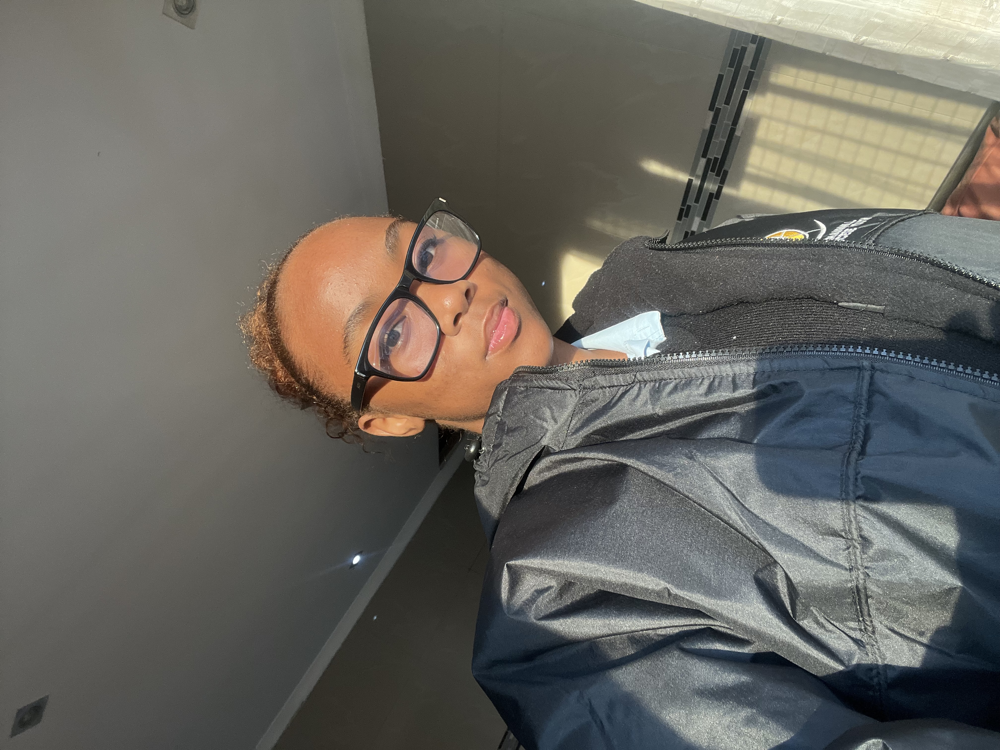

About Us
Sweet Lips is a modern beauty brand focused on creating high-quality lip care and cosmetic products that allow customers to express their individuality and confidence.
The brand specialises in a wide range of lip products including lip gloss, lip liners, lipsticks, lip balms, lip oils, lip tints, lip scrubs, and other lip-care essentials.
Sweet Lips aims to combine beauty, self-expression and skincare by offering products that are stylish, affordable and suitable for everyday use. The brand will focus on creating a memorable customer experience through attractive packaging, quality products and an engaging online presence.
Our Mission
To empower everyone to express their confidence through affordable and high quality lip care
Our Vision
To become South Africa's most loved lip beauty brand whilst simultaneously working on being a globally recognized beauty brand.
Our Values
- Affordability: Beauty should not be expensive
- Inclusivity:Shades and products for every skin tone
- Cruelty-Free:No animal testing EVER!
Meet The Founder

SweetLips was founded in 2026 by a 19-year-old girl from Durban who is just trying to make it in the beauty world by providing affordable makeup products that cater for all ages.What started as a passion for beauty turned into a brand that puts quality and confidence first without the expensive price tag